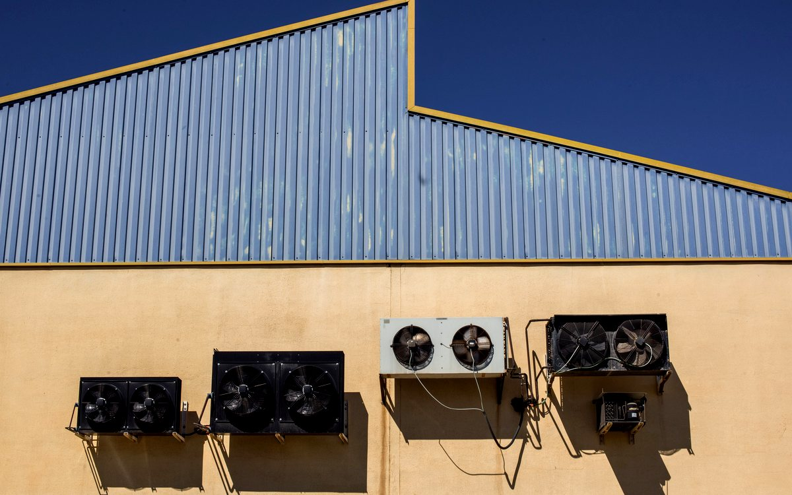
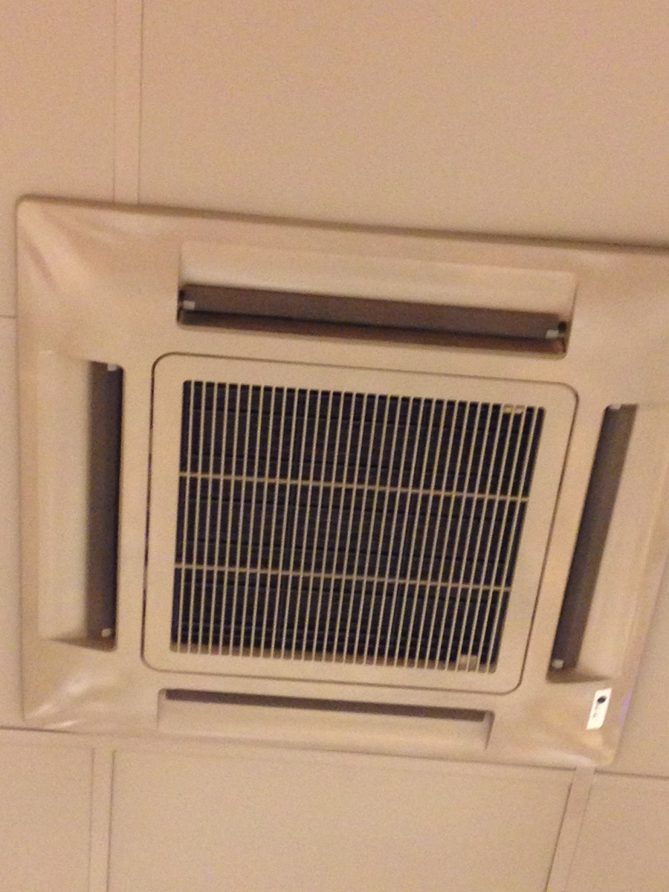
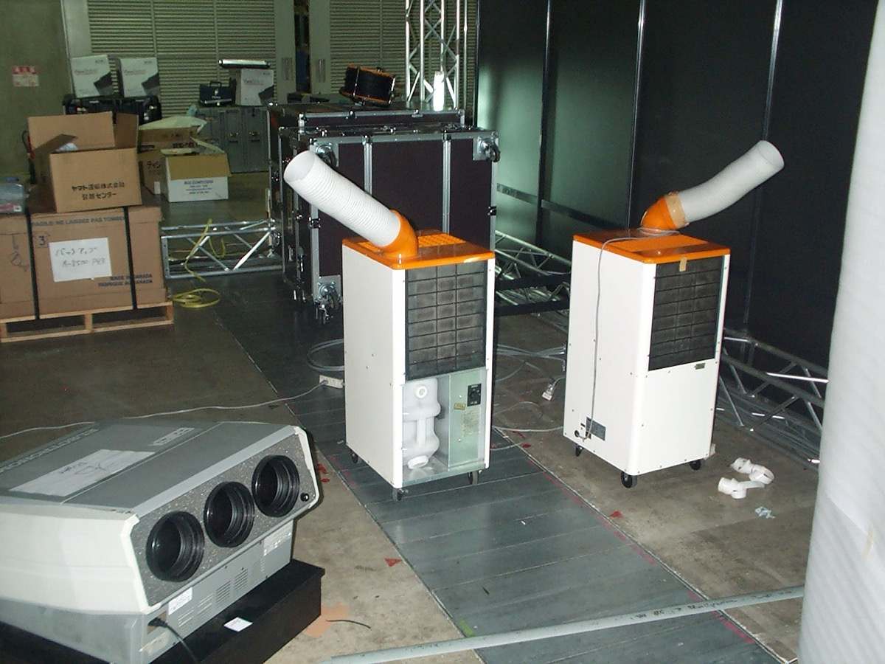
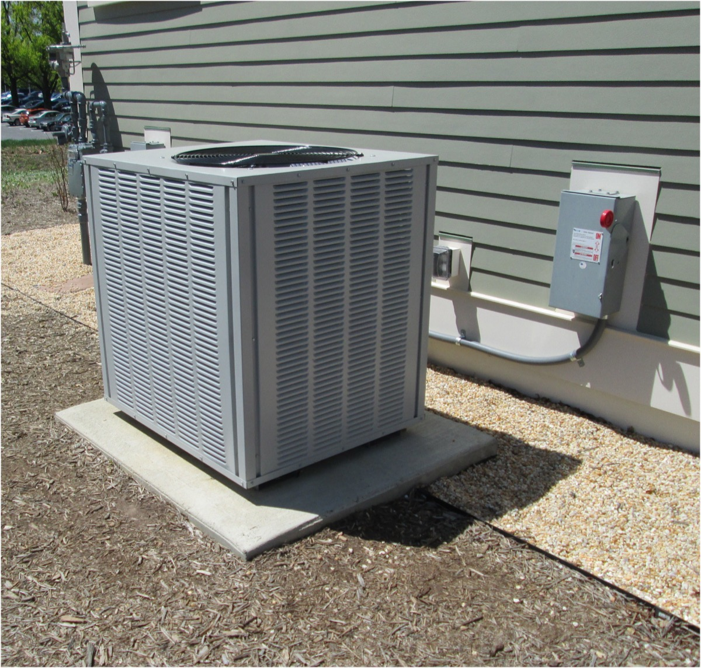
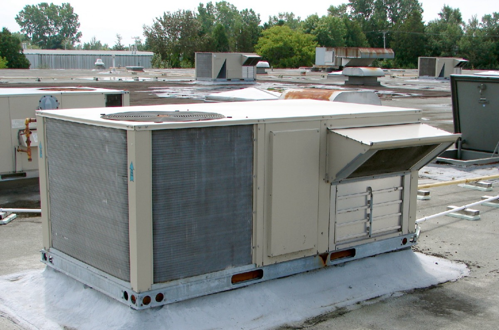
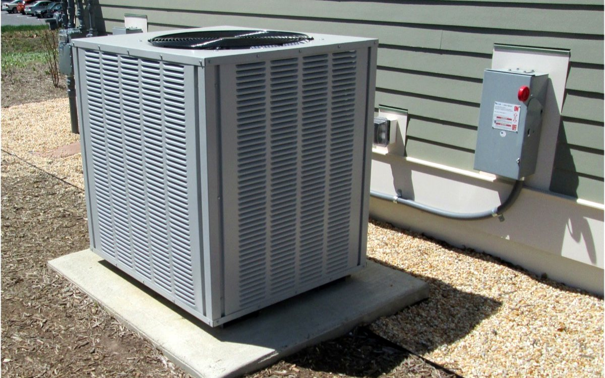
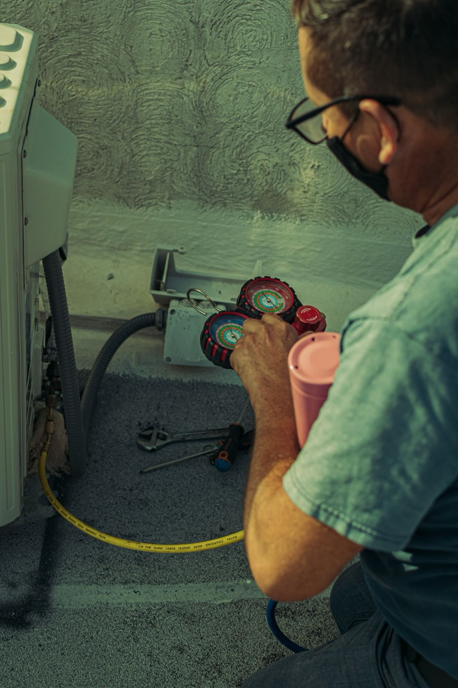
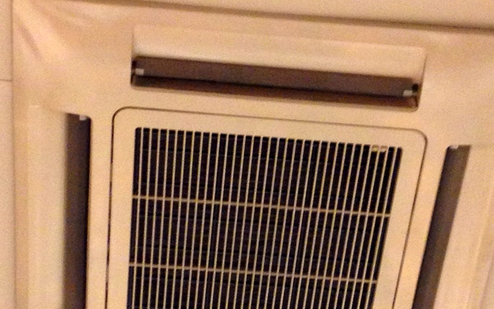
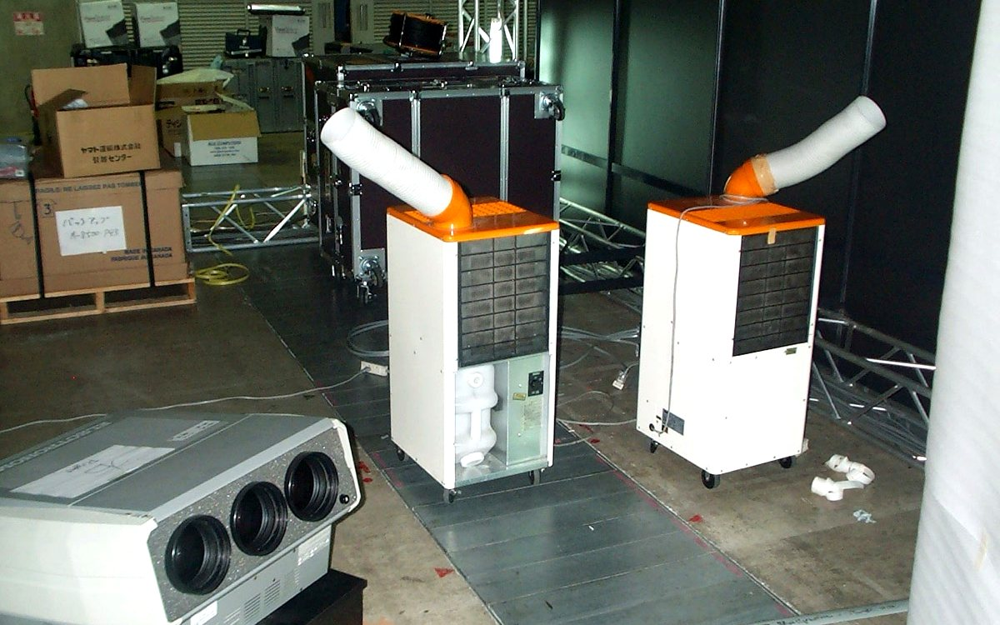

Commercial AC AMC & HVAC Service in Mumbai
Commercial AC maintenance is our core work. Coldway Comforts provides inspection, breakdown support and planned AMC service for cassette AC, tower AC, central AC and ductable systems in offices, showrooms, clinics, restaurants and other large spaces across Mumbai.

Large Space & Commercial ACs
Coldway Comforts focuses on commercial cooling systems that need stronger inspection, planned maintenance and fast repair response.

Cassette AC
Ceiling cassette AC service, water leakage checks, drainage cleaning and cooling performance support.

Tower AC
Tower AC repair and maintenance for showrooms, halls, restaurants and high-footfall areas.

Central AC
Central AC inspection, preventive maintenance and fault diagnosis for large spaces.

Commercial AC AMC
Planned service schedules for offices, shops, clinics, salons and business locations.
What We Do
Inspection, diagnosis, service advice, repair support and follow-up guidance for long-lasting performance.
Best For
Homes, offices, shops, restaurants, salons, clinics, showrooms and commercial spaces.
Coverage
Mumbai, Navi Mumbai and nearby areas.
Send Your AC or HVAC Requirement
Share your area, equipment type, unit count and cooling problem in one structured WhatsApp request. This is especially useful for commercial AMC and multi-unit sites.
Plan the Right Service Visit
Include the brand, AC type, error code, building access and preferred visit time.
Explore Commercial AC & HVAC Expertise
Choose the system or maintenance need that matches your property. Each page explains inspection scope, suitable applications and booking information.
HVAC AMC Service
Planned annual maintenance for commercial HVAC and high-use air-conditioning systems.
Industrial Air-Conditioning Maintenance
Inspection and planned maintenance for heavy-use cooling in workshops and commercial facilities.

Central AC Service and Maintenance
Centralized cooling inspection, preventive maintenance and breakdown diagnosis for large properties.

Multi-Split Air-Conditioning Service
Diagnosis and maintenance for multiple indoor units connected to shared outdoor equipment.

HVAC Controls and Safety System Checks
Operational checks for thermostats, controllers, fault indicators and accessible HVAC electrical components.

Cassette AC Service and Repair
Ceiling cassette AC cleaning, leakage diagnosis, drain-pump checks and commercial AMC.

Tower AC Service and Repair
High-capacity tower AC repair and maintenance for halls, showrooms and commercial spaces.
Ductable AC Service and Maintenance
Ducted commercial cooling inspection, airflow diagnosis, repair and preventive maintenance.
VRF and VRV AC Service Support
Multi-zone VRF and VRV cooling diagnosis, maintenance planning and service coordination.
How We Handle Large Space AC Calls
Commercial AC calls need more planning than a normal home visit. Before service, we confirm the unit type, access, operating hours and cooling load so the technician can inspect the system properly.
Commercial AC AMC for Busy Mumbai Properties
A useful AMC should match the equipment and daily workload of the property. We begin with a site survey, note the number and type of units, review access and operating hours, then discuss a practical preventive-maintenance scope. This helps offices and customer-facing businesses plan service before cooling problems interrupt normal work.
What We Inspect During Commercial AC Service
Commercial cooling complaints often involve more than one component. The technician checks the symptoms first and recommends work based on the unit condition instead of assuming that every weak-cooling issue needs gas filling.
| System or concern | Inspection focus | Why it matters |
|---|---|---|
| Cassette AC | Filters, coil, drain pump, drain line, airflow and ceiling leakage signs | Helps prevent water damage and uneven cooling in occupied spaces |
| Tower AC | Airflow, coil condition, electrical response and operating noise | Supports reliable cooling in halls, showrooms and event spaces |
| Central or ductable AC | Cooling performance, return airflow, drain condition and accessible electrical components | One fault can affect several rooms or a complete business floor |
| Repeated low cooling | Coil cleanliness, airflow restriction, pressure symptoms and leakage signs | Diagnosis avoids unnecessary gas filling and repeated call-outs |
| High-use commercial units | Operating hours, dust load, access and maintenance history | These details help set a suitable preventive-service frequency |
HVAC Annual Maintenance in Churchgate & South Mumbai
Coldway Comforts accepts commercial and industrial air-conditioning maintenance enquiries from Churchgate, Fort, Nariman Point, Colaba, Cuffe Parade, Marine Lines, Mazgaon, Byculla and the other listed service areas. Share the building name, unit count, AC types and preferred inspection time when calling.
Commercial AC AMC FAQs
What is included in a commercial AC AMC?
The scope is planned after a site inspection. It can include scheduled cleaning, drainage checks, airflow checks, electrical inspection, cooling-performance review and breakdown planning for the covered units.
Do you maintain cassette, tower and central AC systems?
Yes. Cassette AC, tower AC, central AC and ductable commercial systems are part of our core service work.
Can you plan HVAC annual maintenance in Churchgate?
Yes. We support commercial AC and HVAC maintenance enquiries in Churchgate and other listed South and Central Mumbai service areas, subject to site access and technician scheduling.
How is AMC visit frequency decided?
Visit frequency depends on operating hours, dust exposure, occupancy, system type and the condition found during the initial site survey.
Do you inspect the site before giving an AMC estimate?
Yes. Unit count, AC type, access, operating hours and current faults are reviewed before the maintenance scope and estimate are discussed.